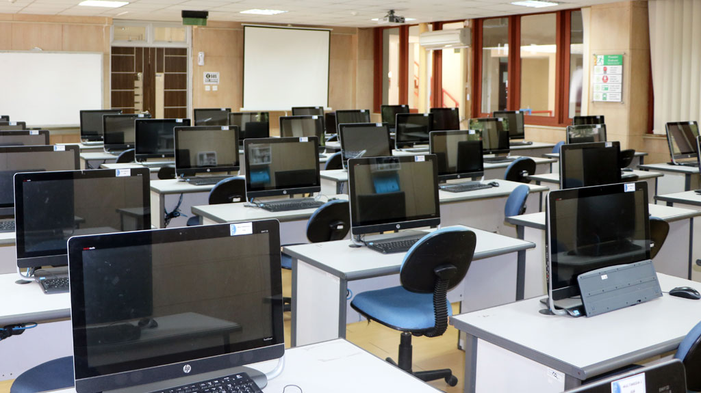
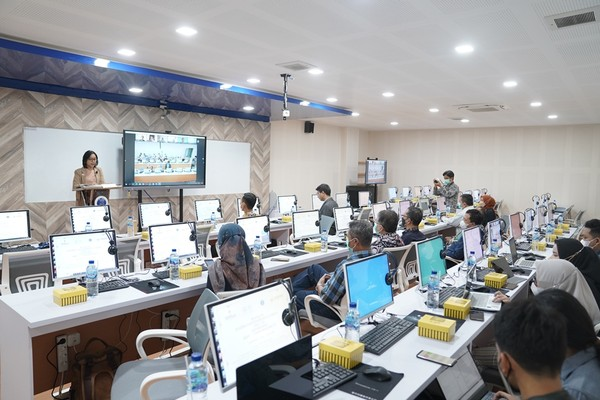
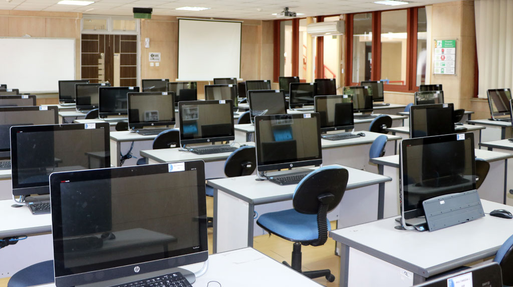
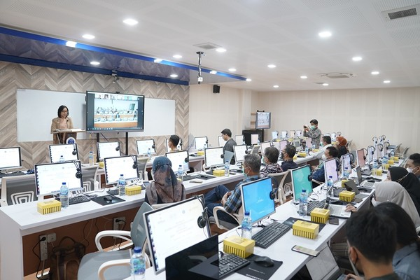

Galeri ITB
Laboratorium Komputer
Laboratorium Komputer di Kampus ITB Jatinangor terletak di Gedung Labtek 2A lantai 2. Terdiri dari tiga buah ruangan, satu ruangan dengan kapasitas 50 orang peserta dan dua ruangan dengan kapasitas masing-masing 25 orang peserta. Pada semester ganjil di tahun ajaran 2016/2017, hanya satu ruangan dengan kapasitas 50 orang yang sudah dipergunakan. Diantaranya untuk kegiatan perkuliahan, kegiatan kuliah jarak jauh (video conference) dan kegiatan praktikum komputer bagi mahasiswa TPB ITB Cirebon, mahasiswa Prodi Teknik Pangan dan Bioenergi dan kimurgi FTI, serta mahasiswa Prodi Rekayasa Kehutanan SITH. Mahasiswa ITB dapat menggunakan fasilitas laboratorium komputer di Kampus ITB Jatinangor ini dengan hanya menunjukkan Kartu Tanda Mahasiswa. Setiap unit kerja yang membutuhkan Laboratorium Komputer dapat mengirimkan surat permohonan ke Direktur ITB Kampus Jatinangor up. Seksi Informasi. Adapun jadwal pemakaian laboratorium komputer dapat dilihat disini (pilih area Labtek2A) . Laboratorium komputer di Labtek 2A dapat beroperasi pada pukul 07:00 sampai 17:00 selama hari kerja. Silahkan menghubungi staff kami di nomor 022 – 86010042 atau kirim email ke humas_@jatinangor.itb.ac.id untuk keterangan lebih lanjut.